Author: Sandipan Dey
In this chapter, we shall continue our discussion on image enhancement, which is the problem of improving the appearance or usefulness of an image. We shall concentrate mainly on spatial filtering techniques to compute image gradients/derivatives, and how these techniques can be used for edge detection in an image. First, we shall start with the basic concepts of image gradients using the first order (partial) derivatives, how to compute the discrete derivatives, and then discuss the second order Derivative/Laplacian. We shall see how they can be used to find edges in an image. Next, we shall discuss a few ways to sharpen/unsharp mask an image using the Python image processing libraries PIL, the filter module of scikit-image, and the ndimage module of SciPy. Next, we shall see how to use different filters (sobel, canny, LoG, and so on) and convolve them with the image to detect edges in an image. Finally, we shall discuss how to compute Gaussian/Laplacian image pyramids (with scikit-image) and use the image pyramids to blend two images smoothly. The topics to be covered in this chapter are as follows:
We can compute the (partial) derivatives of a digital image using finite differences. In this section, let us discuss how to compute the image derivatives, Gradient and Laplacian, and why they are useful. As usual, let us start by importing the required libraries, as shown in the following code block
Import libraries
x%matplotlib inlineimport numpy as npfrom scipy import signal, misc, ndimage
#signal: Signal processing (scipy.signal.)#misc:#ndimage:
from skimage import filters, feature, img_as_floatfrom skimage.io import imreadfrom skimage.color import rgb2gray
#from scikit-image import filters, feature, img_as_float#from scikit-image.io import imread#from scikit-image.color import rgb2gray
from PIL import Image, ImageFilter
import matplotlib.pylab as pylab import matplotlib.image as mpimgThe following diagram shows how to compute the partial derivatives of an image I (which is a function f(x, y)), using finite differences (with forward and central differences, the latter one being more accurate), which can be implemented using convolution with the kernels shown. The diagram also defines the gradient vector, its magnitude (which corresponds to the strength of an edge), and direction (perpendicular to an edge). Locations where the intensity (gray level value) changes sharply in an input image correspond to the locations where there are peaks/spikes (or valleys) in the intensity of the first-order derivative(s) of the image. In other words, the peaks in gradient magnitude mark the edge locations, and we need to threshold the gradient magnitude to find edges in an image:
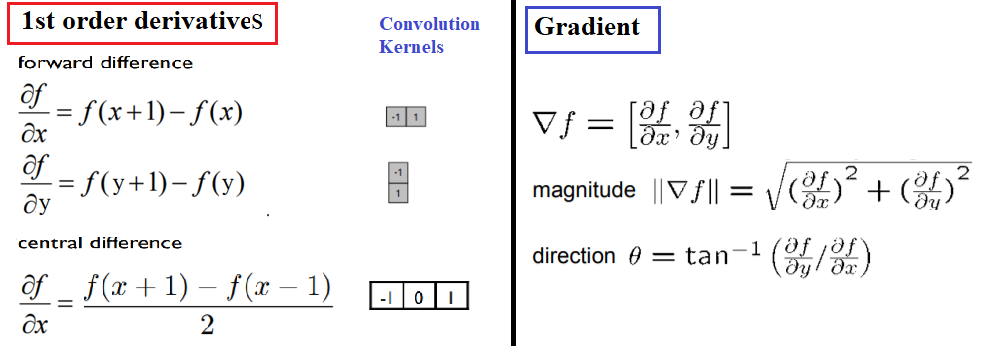
The following code block shows how to compute the gradient (along with the magnitude and the direction) with the convolution kernels shown previously, with the gray-scale chess image as input. It also plots how the image pixel values and the x-component of the gradient vector changes with the y coordinates for the very first row in the image (x=0):
xxxxxxxxxxdef plot_image(image, title): pylab.imshow(image), pylab.title(title, size=20), pylab.axis('off') def rgb2gray(rgb): r, g, b = rgb[:,:,0], rgb[:,:,1], rgb[:,:,2] gray = 0.2989 * r + 0.5870 * g + 0.1140 * b return gray ker_x = [[-1, 1]]ker_y = [[-1], [1]]im = rgb2gray(mpimg.imread('../images/chess.png'))im_x = signal.convolve2d(im, ker_x, mode='same')im_y = signal.convolve2d(im, ker_y, mode='same')im_mag = np.sqrt(im_x**2 + im_y**2)im_dir = np.arctan(im_y/im_x)pylab.gray()pylab.figure(figsize=(30,20))pylab.subplot(231), plot_image(im, 'original'), pylab.subplot(232),plot_image(im_x, 'grad_x')
pylab.subplot(233), plot_image(im_y, 'grad_y'), pylab.subplot(234),plot_image(im_mag, '||grad||')
pylab.subplot(235), plot_image(im_dir, r'$\theta$'), pylab.subplot(236)pylab.plot(range(im.shape[1]), im[0,:], 'b-', label=r'$f(x,y)|_{x=0}$', linewidth=5)pylab.plot(range(im.shape[1]), im_x[0,:], 'r-', label=r'$grad_x (f(x,y))|_{x=0}$')pylab.title(r'$grad_x (f(x,y))|_{x=0}$', size=30)pylab.legend(prop={'size': 20})pylab.show()xxxxxxxxxxC:\Users\anto\Anaconda3\envs\gpuenv\lib\site-packages\ipykernel_launcher.py:15: RuntimeWarning: divide by zero encountered in true_dividefrom ipykernel import kernelapp as appC:\Users\anto\Anaconda3\envs\gpuenv\lib\site-packages\ipykernel_launcher.py:15: RuntimeWarning: invalid value encountered in true_dividefrom ipykernel import kernelapp as appC:\Users\anto\Anaconda3\envs\gpuenv\lib\site-packages\ipykernel_launcher.py:15: RuntimeWarning: invalid value encountered in arctanfrom ipykernel import kernelapp as app
xxxxxxxxxx<Figure size 432x288 with 0 Axes>
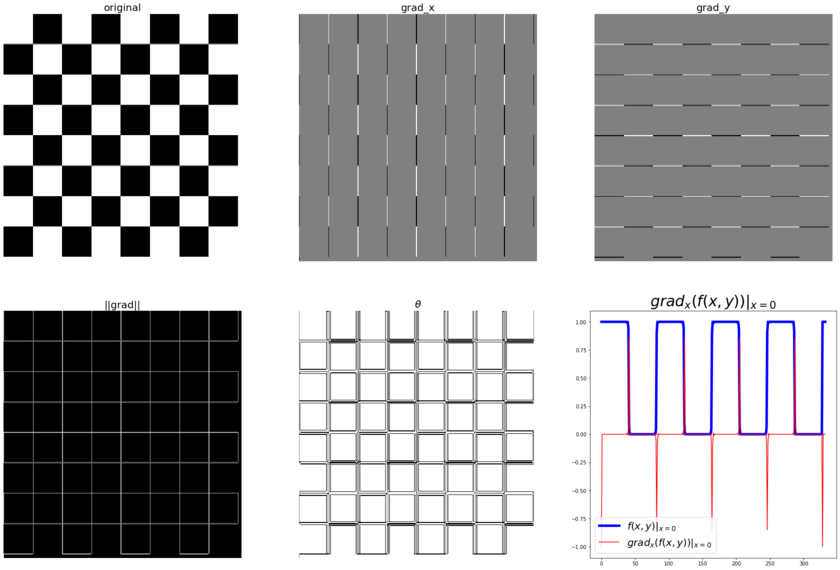
The following diagram shows the output of the preceding code block. As can be seen from the following diagram, the partial derivatives in the x and y directions detect the vertical and horizontal edges in the image, respectively. The gradient magnitude shows the strength of the edges at different locations in the image. Also, if we pick all the pixels from the original image corresponding to a single row (row 0, for instance), we can see a square wave (corresponding to alternating white and black intensity patterns), whereas the gradient magnitude for the same set of pixels have spikes (a sudden increase/decrease) in intensity, and these correspond to the (vertical) edges.
In the earlier example, the magnitude and direction of the edges were shown in different images. We can create an RGB image and set the R, G, and B values as follows to display both magnitude and direction in the same image
xxxxxxxxxxfrom skimage.io import imreadfrom skimage.color import rgb2grayfrom skimage.util import random_noisefrom skimage.filters import gaussianimport matplotlib.pylab as pltfrom scipy import signalimport numpy as npker_x = [[-1, 1]]ker_y = [[-1], [1]]im = rgb2gray(imread('../images/tiger3.jpg'))# im = random_noise(im, var=sigma**2)#im = gaussian(im, sigma=0.25)print(np.max(im))xxxxxxxxxx1.0
xxxxxxxxxxim_x = np.clip(signal.convolve2d(im, ker_x, mode='same'),0,1)im_y = np.clip(signal.convolve2d(im, ker_y, mode='same'),0,1)im_mag = np.sqrt(im_x**2 + im_y**2)#im_ang = np.arctan(im_y/im_x)im_ang = np.arctan(0.0/im_x)
#print(im_ang.shape) #(340, 303)print('im.shape =', im.shape)im_ang[100] #,100]extract = im[100:103,100:103] #errora=extract.shapeprint(a)print(extract)print([100,101])print(im[[100,101,102],[100,101,102]])xxxxxxxxxxim.shape = (340, 303)(3, 3)[[0.91481176 0.94758314 0.90836745][0.90050941 0.95597686 0.98342784][0.88984588 0.95259098 0.9946498 ]][100, 101][0.91481176 0.95597686 0.9946498 ]
xxxxxxxxxx/usr/local/lib/python3.5/dist-packages/ipykernel_launcher.py:5: RuntimeWarning: invalid value encountered in true_divide"""
xxxxxxxxxxim_x = np.clip(signal.convolve2d(im, ker_x, mode='same'),0,1)im_y = np.clip(signal.convolve2d(im, ker_y, mode='same'),0,1)im_mag = np.sqrt(im_x**2 + im_y**2)im_ang = np.arctan(im_y/im_x)#im_ang = np.arctan(0.0/im_x)
#print(im_ang.shape) #(340, 303)#print('im.shape =', im.shape) #(340, 303)extract = im[100:103,100:103] #errora=extract.shapeprint(a)print(extract)print([100,101])print(im[[100,101,102],[100,101,102]])xxxxxxxxxx(3, 3)[[0.91481176 0.94758314 0.90836745][0.90050941 0.95597686 0.98342784][0.88984588 0.95259098 0.9946498 ]][100, 101][0.91481176 0.95597686 0.9946498 ]
xxxxxxxxxx/usr/local/lib/python3.5/dist-packages/ipykernel_launcher.py:4: RuntimeWarning: divide by zero encountered in true_divideafter removing the cwd from sys.path./usr/local/lib/python3.5/dist-packages/ipykernel_launcher.py:4: RuntimeWarning: invalid value encountered in true_divideafter removing the cwd from sys.path.
xxxxxxxxxxprint(im_y[100:103,100:103])print(im_x[100:103,100:103])print(im_mag[100:103,100:103])print(im_ang[100:103,100:103])#print(im_ang[[100,101],[100,101]])xxxxxxxxxx[[0. 0.00644431 0.04566 ][0.01430235 0. 0. ][0.01066353 0.00338588 0. ]][[0.03667804 0. 0.03921569][0.07168941 0. 0. ][0.04452118 0. 0. ]][[0.03667804 0.00644431 0.06018892][0.07310218 0. 0. ][0.04578041 0.00338588 0. ]][[0. 1.57079633 0.86117926][0.19691897 nan nan][0.23508719 1.57079633 nan]]
xxxxxxxxxxplt.gray()plt.figure(figsize=(20,30))plt.subplot(131)plt.imshow(im)plt.title('original', size=30)plt.axis('off')plt.subplot(132)plt.imshow(im_x)plt.title('grad_x', size=30)plt.axis('off')plt.subplot(133)plt.imshow(im_y)plt.title('grad_y', size=30)plt.axis('off')
xxxxxxxxxx(-0.5, 302.5, 339.5, -0.5)
xxxxxxxxxx<matplotlib.figure.Figure at 0x7f77c4d490b8>
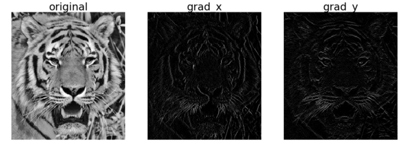
xxxxxxxxxxplt.figure(figsize=(20,30))plt.subplot(131)plt.imshow(im_mag)plt.title('||grad||', size=30)plt.axis('off')plt.subplot(132)plt.imshow(im_ang)plt.title(r'$\theta$', size=30)plt.axis('off')im.shapeplt.subplot(133)im_j = np.zeros((im.shape[0],im.shape[1],3))#im_j.shapeim_j[...,0] = im_mag*np.sin(im_ang)im_j[...,1] = im_mag*np.cos(im_ang)plt.imshow(im)plt.title(r'||grad||+$\theta$', size=30)plt.axis('off')plt.show()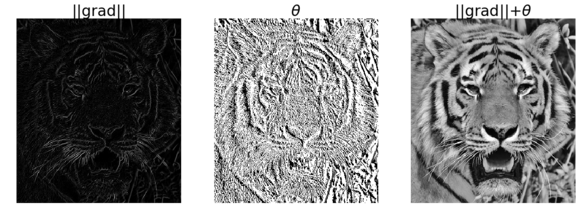
It has been shown by Rosenfeld and Kak that the simplest isotropic derivative operator is the Laplacian, which is defined as shown in the following diagram. The Laplacian approximates the second derivative of an image and detects edges. It is an isotropic (rotationally invariant) operator and the zero-crossings mark edge location; we shall discuss more about that later in the chapter. In other words, in locations where we have spikes/peaks (or valleys) in the first-order derivative(s) of an input image, we have zero-crossings in the corresponding locations of the second-order derivative(s) of the input image:
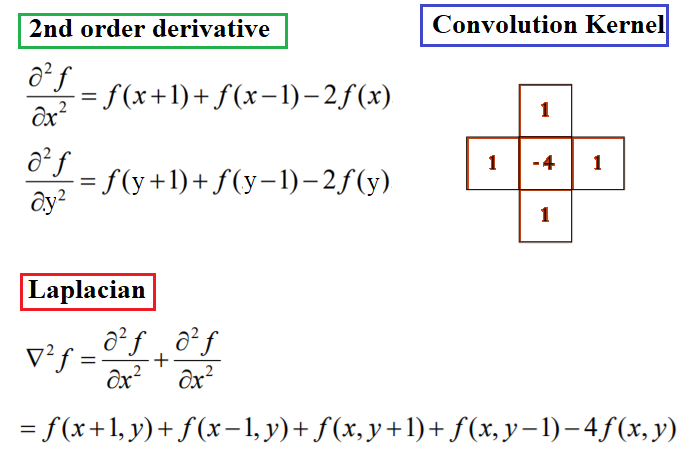
Some notes about the Laplacian
Let's take a look at the following notes:
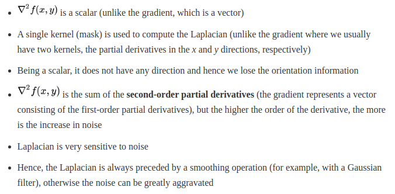
The following code snippet shows how to compute the Laplacian of an image using convolution with the kernel shown previously:
xxxxxxxxxxker_laplacian = [[0,-1,0],[-1, 4, -1],[0,-1,0]]im = rgb2gray(imread('../images/chess.png'))im1 = np.clip(signal.convolve2d(im, ker_laplacian, mode='same'),0,1)pylab.gray()pylab.figure(figsize=(20,10))pylab.subplot(121), plot_image(im, 'original')pylab.subplot(122), plot_image(im1, 'laplacian convolved')pylab.show()xxxxxxxxxx<matplotlib.figure.Figure at 0x7f77c4c1cbe0>
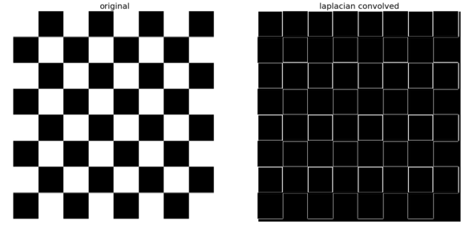
The screenshot above shows the output of the preceding code snippet. As can be seen, the Laplacian output also finds the edges in the image
Derivative filters computed using finite difference are quite sensitive to noise. As we saw in the last chapter, the pixels in an image that have very different intensity values from their neighbors are generally the noise pixels. In general, the more the noise the larger the change in intensity, and the stronger is the response obtained with the filters. The next code block adds some Gaussian noise to the image to see the effects on the gradient. Let us again consider a single row (row 0, precisely) of the image, and let us plot the intensity as a function of the x location:
xxxxxxxxxxfrom skimage.io import imreadfrom skimage.color import rgb2grayfrom skimage.util import random_noisefrom skimage.filters import gaussianimport matplotlib.pylab as pltfrom scipy import signalimport numpy as npker_x = [[-1, 1]]ker_y = [[-1], [1]]im = rgb2gray(imread('../images/chess.png'))sigma = 0.25sign = np.random.random(im.shape)sign[sign <= 0.5] = -1sign[sign > 0.5] = 1im = random_noise(im, var=sigma**2)im = gaussian(im, sigma=0.25)print(np.max(im))im_x = signal.convolve2d(im, ker_x, mode='same')im_y = signal.convolve2d(im, ker_y, mode='same')im_mag = np.sqrt(im_x**2 + im_y**2)im_ang = np.arctan(im_y/im_x)plt.gray()plt.figure(figsize=(30,20))plt.subplot(231)plt.imshow(im)plt.title('original', size=30)plt.axis('off')plt.subplot(232)plt.imshow(im_x)plt.title('grad_x', size=30)plt.axis('off')plt.subplot(233)plt.imshow(im_y)plt.title('grad_y', size=30)plt.axis('off')plt.subplot(234)plt.imshow(im_mag)plt.title('||grad||', size=30)plt.axis('off')plt.subplot(235)plt.imshow(im_ang)plt.title(r'$\theta$', size=30)plt.axis('off')plt.subplot(236)plt.plot(range(im.shape[1]), im[0,:], 'b-', label=r'$f(x,y)|_{x=0}$', linewidth=5)plt.plot(range(im.shape[1]), im_x[0,:], 'r-', label=r'$grad_x (f(x,y))|_{x=0}$')plt.title(r'$grad_x (f(x,y))|_{x=0}$', size=30)plt.legend(prop={'size': 20})plt.show()xxxxxxxxxx1.0000000000000004
xxxxxxxxxx/home/cj/anaconda3/lib/python3.7/site-packages/ipykernel_launcher.py:21: RuntimeWarning: divide by zero encountered in true_divide/home/cj/anaconda3/lib/python3.7/site-packages/ipykernel_launcher.py:21: RuntimeWarning: invalid value encountered in true_divide/home/cj/anaconda3/lib/python3.7/site-packages/ipykernel_launcher.py:21: RuntimeWarning: invalid value encountered in arctan
xxxxxxxxxx<Figure size 432x288 with 0 Axes>
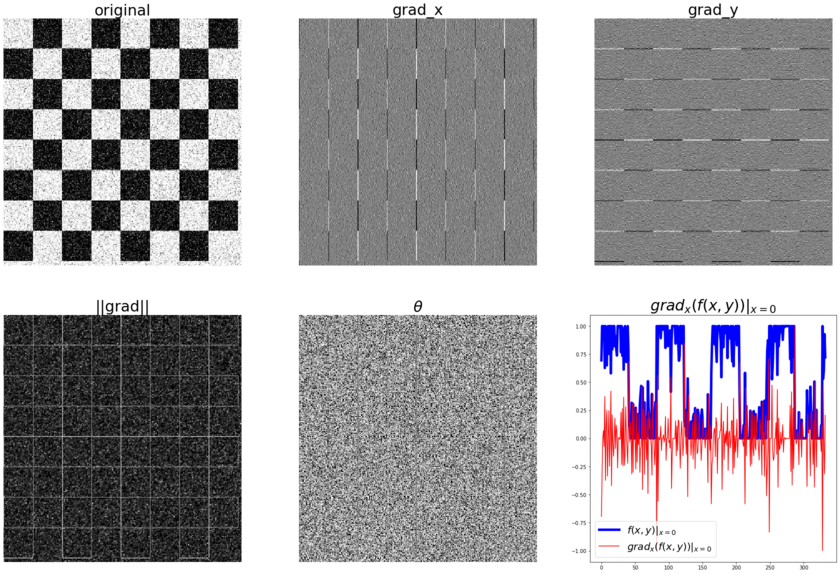
The diagram tabulated shows the output of the previous code block after adding some random noise to the chess image. As we can see, adding random noise to the input image has a high impact on the (partial) derivatives and the gradient magnitude; the peaks corresponding to the edges become almost indistinguishable from the noise and the pattern gets destroyed.
The objective of sharpening is to highlight detail in an image or to enhance detail that has been blurred. In this section, we discuss a few techniques along with a few examples demonstrating a couple of different ways to sharpen an image.
An image can be sharpened using the Laplacian filter with the following couple of steps:
xxxxxxxxxximport os#os.getcwd()#os.listdir("../images/")xxxxxxxxxxfrom skimage.filters import laplaceim = rgb2gray(imread('../images/me8.JPG'))xxxxxxxxxxIm1 = laplace(im)im1 = np.clip(laplace(im) + im, 0, 1)im2 = np.clip(laplace(im) + im, 0.5,0.8)pylab.figure(figsize=(10,18))pylab.subplot(311), plot_image(im, 'original image')pylab.subplot(312), plot_image(im1, 'sharpened image')pylab.subplot(313), plot_image(im2, 'sharpened image_2')pylab.tight_layout()pylab.show()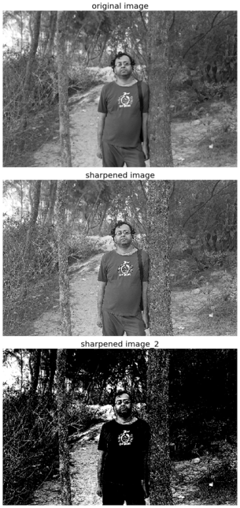
The above is the output of the preceding code block, the original image, and the sharpened image using the previous algorithm
Unsharp masking is a technique to sharpen images, where a blurred version of an image is subtracted from the image itself. The typical blending formula used for unsharp masking is as follows: sharpened = original + (original − blurred) × amount. Here, amount is a parameter. The next few sections demonstrate how to implement this with the ndimage module of SciPy functions in Python.
As discussed, we can first blur an image and then compute the detail image as the difference between the original and the blurred image to implement unsharp masking. The sharpened image can be computed as a linear combination of the original image and the detail image. The following diagram illustrates the concept again:
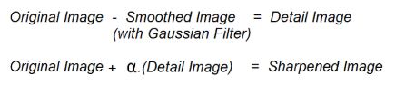
The following code block shows how the unsharp mask operation can be implemented with the SciPy ndimage module for a gray-scale image (the same can be done with a color image, which is left as an exercise for the reader), using the preceding concept:
xxxxxxxxxxdef rgb2gray(im): ''' the input image is an RGB image with pixel values for each channel in [0,1] ''' return np.clip(0.2989 * im[...,0] + 0.5870 * im[...,1] + 0.1140 * im[...,2], 0, 1)
im = rgb2gray(img_as_float(misc.imread('../images/me4.jpg')))im_blurred = ndimage.gaussian_filter(im, 5)im_detail = np.clip(im - im_blurred, 0, 1)pylab.gray()fig, axes = pylab.subplots(nrows=2, ncols=3, sharex=True, sharey=True, figsize=(15, 15))axes = axes.ravel()axes[0].set_title('Original image', size=15), axes[0].imshow(im)axes[1].set_title('Blurred image, sigma=5', size=15),axes[1].imshow(im_blurred)axes[2].set_title('Detail image', size=15), axes[2].imshow(im_detail)alpha = [1, 5, 10]for i in range(3): im_sharp = np.clip(im + alpha[i]*im_detail, 0, 1) axes[3+i].imshow(im_sharp), axes[3+i].set_title('Sharpened image, alpha=' + str(alpha[i]), size=15)for ax in axes: ax.axis('off')fig.tight_layout()pylab.show()As discussed earlier, the pixels that construct the edges in an image are the ones where there are sudden rapid changes (discontinuities) in the image intensity function, and the goal of edge detection is to identify these changes. Hence, edge detection is a pre-processing technique where the input is a 2D (gray-scale) image and the output is a set of curves (that are called the edges). The salient features of an image are extracted in the edges detection process; an image representation using edges is more compact than one using pixels. The edge detectors output the magnitude of the gradients (as a gray-scale image), and now, to get the edge pixels (as a binary image), we need to threshold the gradient image. Here, a very simple fixed gray-level thresholding is used (assigning all negative-valued pixels to zero with the numpy's clip() function); to obtain the binary images, we can use more sophisticated methods (such as thresholding using ostu's segmentation), as we shall see later in Chapter 8, Image Segmentation. Let's start on the edge detectors with gradient magnitude computed using finite-difference approximations of the partial derivatives, and then proceed on to the Sobel filter
Gradient magnitude (which can be thought of as the strength of edges) computed using (forward) finite-difference approximations of the partial derivatives can be used for edge detection, as we saw earlier. The following screenshot shows the output obtained by using the same code as the previous time to compute the gradient magnitude, and then clip the pixel values in a [0, 1] interval, with the zebra's input gray-scale image 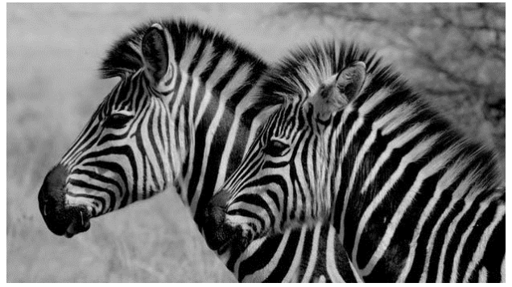 The following screenshot shows the gradient magnitude image. As can be seen, the edges appear to be thicker and multipixel wide 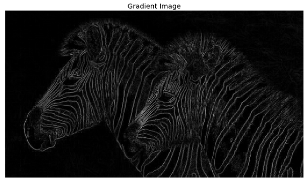 In order to obtain a binary image with each edge one-pixel wide, we need to apply the non-maximum suppression algorithm, which removes a pixel if it is not a local maximum along the gradient direction in the pixel's neighborhood. The implementation of the algorithm is left as an exercise for the reader. The following screenshot shows the output with non-max suppression 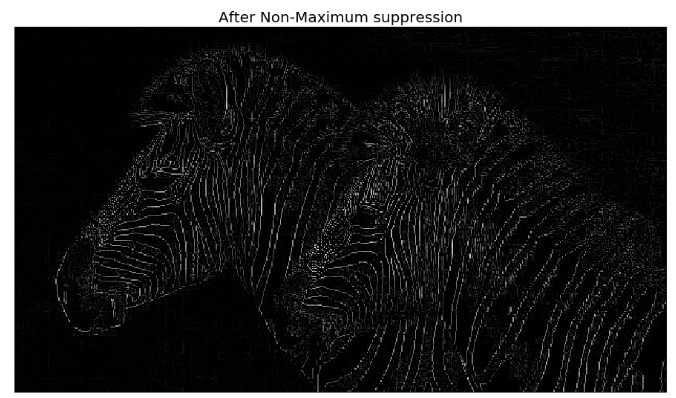
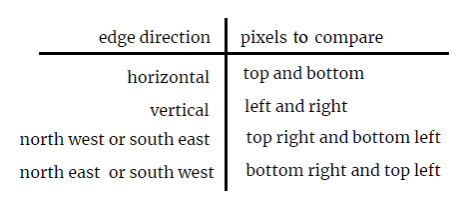
note: Matplotlib is the toolkit, PyPlot is an interactive way to use Matplotlib and PyLab is the same thing as PyPlot but with some extra shortcuts. Using PyLab is discouraged now. http://queirozf.com/entries/matplotlib-pylab-pyplot-etc-what-s-the-different-between-these
The (first order) derivatives can be approximated better than using the finite difference. The Sobel operators shown in the following diagram are used quite frequently
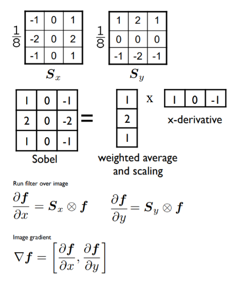
The 1/8 term is not included in the standard definition of the Sobel operator as for edge detection purposes, it does not make a difference, although the normalization term is needed to get the gradient value correctly. The next Python code snippet shows how to use the sobel_h(), sobel_y(), and sobel() functions of the filters module of scikit-image to find the horizontal/vertical edges and compute the gradient magnitude using the Sobel operators, respectively:
The following picture shows the output of the preceding code block. As can be seen, the horizontal and vertical edges of the image are detected by the horizontal and vertical Sobel filters, whereas the gradient magnitude image computed using the Sobel filter detects the edges in both directions
xxxxxxxxxxim = rgb2gray(imread('../images/tajmahal1.jpg')) # RGB image to gray scalepylab.gray()pylab.figure(figsize=(20,18))pylab.subplot(2,2,1)plot_image(im, 'original')pylab.subplot(2,2,2)edges_x = filters.sobel_h(im) #filters.sobel_hplot_image(np.clip(edges_x,0,1), 'sobel_x')pylab.subplot(2,2,3)edges_y = filters.sobel_v(im) #filters.sobel_vplot_image(np.clip(edges_y,0,1), 'sobel_y')pylab.subplot(2,2,4)edges = filters.sobel(im) #filters.sobeplot_image(np.clip(edges,0,1), 'sobel')pylab.subplots_adjust(wspace=0.1, hspace=0.1)pylab.show()xxxxxxxxxx<matplotlib.figure.Figure at 0x1df4162dfd0>
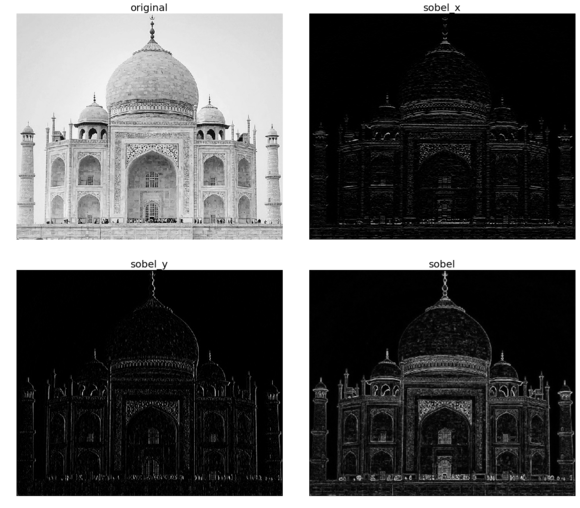
The screenshot shows the output of the preceding code block. As can be seen, the horizontal and vertical edges of the image are detected by the horizontal and vertical Sobel filters, whereas the gradient magnitude image computed using the Sobel filter detects the edges in both directions
There are quite a few different edge detection operators used in image processing algorithms; all of them are discrete (first or second order) differentiation operators and they try to approximate the gradient of the image intensity function (for instance, the Sobel operator, which we discussed previously). The kernels shown in the following diagram are a few popular ones used for edge detection. For example, popular derivative filters approximating the 1st Order image derivatives are Sobel, Prewitt, Sharr, and Roberts filters, whereas a derivative filter approximating the 2nd Order derivatives is the Laplacian:
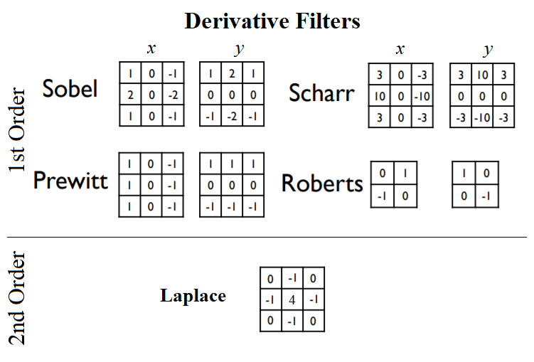
As discussed in the scikit-image documentation, the finite-difference approximations of the gradient computed by different operators are different. For example, the Sobel filter in general performs better than the Prewitt filter, whereas the Scharr filter results in a less rotational variance than the Sobel filter. The following code block applies different edge detector filters on the golden gate gray-scale image, and shows the gradient magnitudes obtained:
xxxxxxxxxxim = rgb2gray(imread('../images/goldengate.jpg')) # RGB image to gray scale#im = rgb2gray(imread('../images/me.jpg'))#im = rgb2gray(imread('../images/zebras.jpg'))pylab.gray()pylab.figure(figsize=(20,24))pylab.subplot(3,2,1), plot_image(im, 'original')edges = filters.roberts(im)pylab.subplot(3,2,2), plot_image(edges, 'roberts')edges = filters.scharr(im)pylab.subplot(3,2,3), plot_image(edges, 'scharr')edges = filters.sobel(im)pylab.subplot(3,2,4), plot_image(edges, 'sobel')edges = filters.prewitt(im)pylab.subplot(3,2,5), plot_image(edges, 'prewitt')edges = np.clip(filters.laplace(im), 0, 1)pylab.subplot(3,2,6), plot_image(edges, 'laplace')pylab.subplots_adjust(wspace=0.1, hspace=0.1)pylab.show()xxxxxxxxxx<matplotlib.figure.Figure at 0x7fbbb2185198>
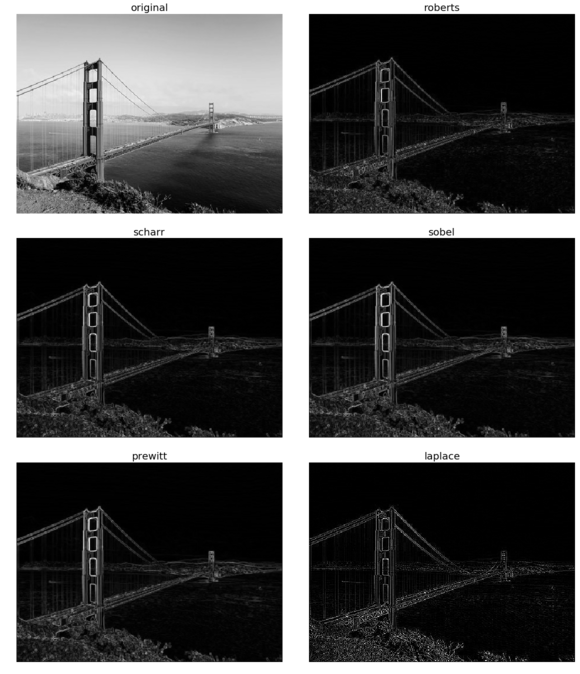
Again, a post-processing step for edge detection is non-maximum suppression that thins the (thick) edges obtained using the first order derivatives; we have not previously done this operation. In the next section, as we shall see, a more advanced state-of-the-art edge detector, Canny, does it automatically.
The Canny edge detector is a popular edge detection algorithm, developed by John F. Canny. This algorithm has the following multiple steps:
So finally, the algorithm outputs the strong edges of the image. The following code block shows how the Canny edge detector can be implemented with scikit-image:
The following screenshot shows the output of the previous code; the edges are detected with the Canny filter with different sigma values for the initial Gaussian LPF. As can be seen, with a lower value of sigma, the original image gets less blurred to start with and hence more edges (finer details) can be found:
xxxxxxxxxxim = rgb2gray(imread('../images/tiger3.jpg'))im = ndimage.gaussian_filter(im, 4)im += 0.05 * np.random.random(im.shape)edges1 = feature.canny(im)edges2 = feature.canny(im, sigma=2)fig, (axes1, axes2, axes3) = pylab.subplots(nrows=1, ncols=3, figsize=(30,12), sharex=True, sharey=True)axes1.imshow(im, cmap=pylab.cm.gray), axes1.axis('off'),axes1.set_title('noisy image', fontsize=50)axes2.imshow(edges1, cmap=pylab.cm.gray), axes2.axis('off')axes2.set_title('Canny filter, $\sigma=1$', fontsize=50)axes3.imshow(edges2, cmap=pylab.cm.gray), axes3.axis('off')axes3.set_title('Canny filter, $\sigma=3$', fontsize=50)fig.tight_layout()pylab.show()xxxxxxxxxxC:\Users\Sandipan.Dey\Anaconda\envs\ana41py35\lib\site-packages\scipy\ndimage\measurements.py:431: FutureWarning: Conversion of the second argument of issubdtype from `int` to `np.signedinteger` is deprecated. In future, it will be treated as `np.int32 == np.dtype(int).type`.safe = ((np.issubdtype(dt, int) and dt.itemsize <= int_size) or
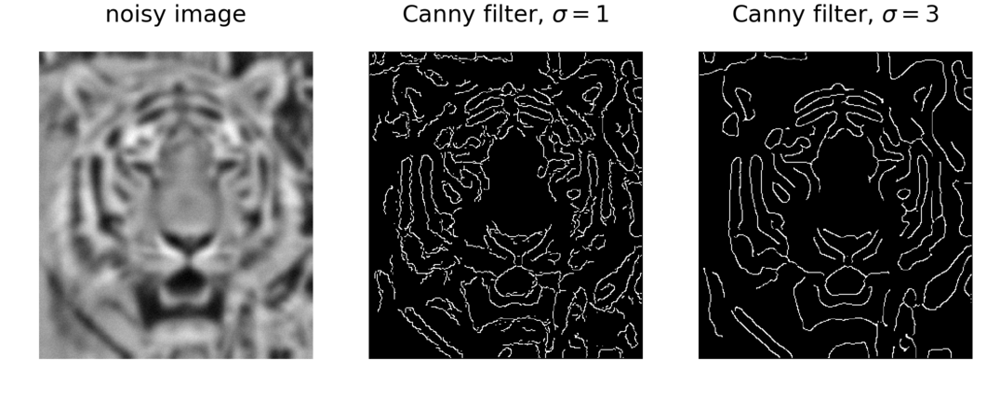
Laplacian of a Gaussian (LoG) is just another linear filter which is a combination of Gaussian followed by the Laplacian filter on an image. Since the 2nd derivative is very sensitive to noise, it is always a good idea to remove noise by smoothing the image before applying the Laplacian to ensure that noise is not aggravated. Because of the associative property of convolution, it can be thought of as taking the 2nd derivative (Laplacian) of the Gaussian filter and then applying the resulting (combined) filter onto the image, hence the name LoG. It can be efficiently approximated using the difference of two Gaussians (DoG) with different scales (variances), as shown in the following diagram:
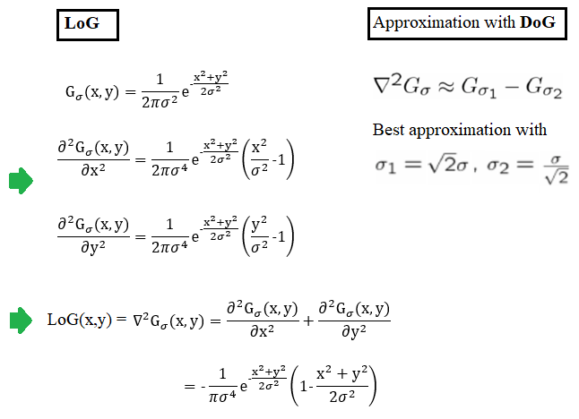
The following code block shows how to compute the LOG filter and the corresponding best DoG approximation (with a given value of σ) and apply them on the same input image, using SciPy signal module's convolve2d() function:
The following images show the input image and the output images obtained with the LoG and DoG filters (with σ=3), along with the visualization of the corresponding kernels. From the kernel visualizations, it can be seen that LoG is going to act as a BPF on the input image (since it blocks both low and high frequencies). The band-pass nature of LoG can also be explained by the DoG approximation (the Gaussian filter being a LPF). Also, we can see that the output images obtained with LoG/DoG filters are quite similar:
We can see from these images that the LoG filter is quite useful for edge detection. As we shall see shortly, LoG is also useful for finding blobs in an image.
xxxxxxxxxxfrom scipy.signal import convolve2dfrom scipy.misc import imreadfrom scipy.ndimage import gaussian_filterfrom numpy import pi
def plot_kernel(kernel, s, name): pylab.imshow(kernel, cmap='YlOrRd')
def LOG(k=12, s=3): n = 2*k+1 # size of the kernel kernel = np.zeros((n,n)) for i in range(n): for j in range(n): kernel[i,j] = -(1-((i-k)**2+(j-k)**2)/(2.*s**2))*np.exp(-((i-k)**2+(j-k)**2)/(2.*s**2))/(pi*s**4) kernel = np.round(kernel / np.sqrt((kernel**2).sum()),3) return kernel
def DOG(k=12, s=3): n = 2*k+1 # size of the kernel s1, s2 = s * np.sqrt(2), s / np.sqrt(2) kernel = np.zeros((n,n)) for i in range(n): for j in range(n): kernel[i,j] = np.exp(-((i-k)**2+(j-k)**2)/(2.*s1**2))/(2*pi*s1**2) - np.exp(-((i-k)**2+(j-k)**2)/(2.*s2**2))/(2*pi*s2**2) kernel = np.round(kernel / np.sqrt((kernel**2).sum()),3) return kernel
s = 3 # sigma value for LoGimg = rgb2gray(imread('../images/me.jpg'))kernel = LOG()outimg = convolve2d(img, kernel)pylab.figure(figsize=(20,20))pylab.subplot(221), pylab.title('LOG kernel', size=20), plot_kernel(kernel, s, 'DOG')pylab.subplot(222), pylab.title('output image with LOG', size=20)pylab.imshow(np.clip(outimg,0,1), cmap='gray') # clip the pixel values in between 0 and 1kernel = DOG()outimg = convolve2d(img, DOG())pylab.subplot(223), pylab.title('DOG kernel', size=20), plot_kernel(kernel, s, 'DOG')pylab.subplot(224), pylab.title('output image with DOG', size=20)pylab.imshow(np.clip(outimg,0,1), cmap='gray')pylab.show() 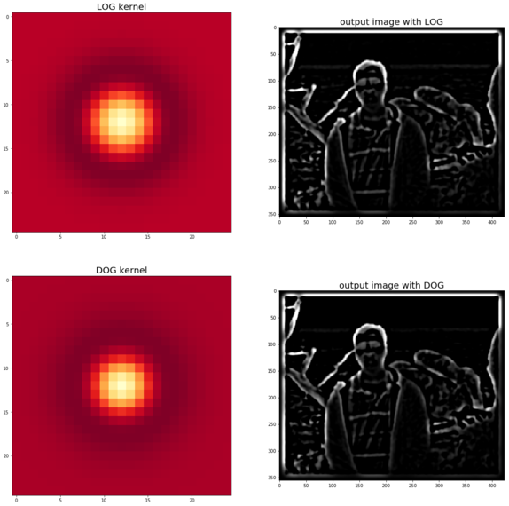
The SciPy ndimage module's gaussian_laplace() function can also be used to implement LoG, as shown in the following code block
The following images show the input image and the output images obtained with the LoG filter with different values of the smoothing parameter σ (standard deviation of the Gaussian filter):
xxxxxxxxxximg = rgb2gray(imread('../images/zebras.jpg'))fig = pylab.figure(figsize=(25,15))pylab.gray() # show the filtered result in grayscalefor sigma in range(1,10): pylab.subplot(3,3,sigma) img_log = ndimage.gaussian_laplace(img, sigma=sigma) pylab.imshow(np.clip(img_log,0,1)), pylab.axis('off') pylab.title('LoG with sigma=' + str(sigma), size=20)pylab.show()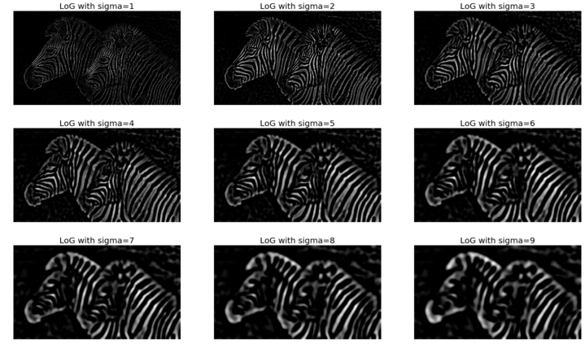
The following describes the steps in edge detection with an LOG filter:
First, the input image needs to be smoothed (by convolution with the Gaussian filter).
Then, the smoothed image needs to be convolved with the Laplacian filter to obtain the output image as ∇2 (I (x,y) * G (x,y)).
Finally the zero-crossings from the image obtained in the last step need to be computed, as shown in the following diagram:
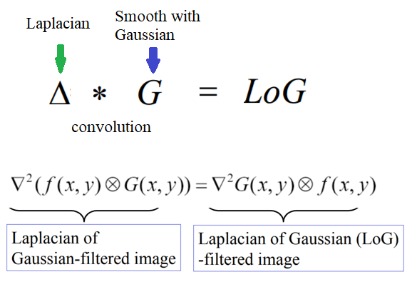
Computing the zero-crossings in the LoG-convolved image (to detect edges as a binary image) was proposed by Marr and Hildreth. Identification of the edge pixels can be done by viewing the sign of the LoG-smoothed image by defining it as a binary image. The algorithm to compute the zero-crossing is as follows:
The implementation of this function is left as an exercise. The following code block depicts the edges of the same zebra image detected with zero-crossings:
The following screenshot shows the output of the preceding code block, with edges identified by zero-crossing alone at different σ scales:
The previous images show zero-crossings with LoG/DoG as an edge detector. It should be noticed that the zero-crossings form closed contours.
xxxxxxxxxxdef zero_crossing(img): '''implement the function here''' return None
fig = pylab.figure(figsize=(25,15))pylab.gray() # show the filtered result in grayscalefor sigma in range(2,10, 2): pylab.subplot(2,2,sigma/2) result = ndimage.gaussian_laplace(img, sigma=sigma) pylab.imshow(zero_crossing(result)) # implement the function zero_crossing() using the above algorithm pylab.axis('off') pylab.title('LoG with zero-crossing, sigma=' + str(sigma), size=20)pylab.show()PIL's ImageFilter module's filter function can also be used to find and enhance edges in an image. The following code block shows an example with the UMBC library image as input:
xxxxxxxxxxfrom PIL.ImageFilter import (FIND_EDGES, EDGE_ENHANCE, EDGE_ENHANCE_MORE)im = Image.open('../images/umbc_lib.jpg')pylab.figure(figsize=(18,25))pylab.subplot(2,2,1)plot_image(im, 'original (UMBC library)')i = 2for f in (FIND_EDGES, EDGE_ENHANCE, EDGE_ENHANCE_MORE): pylab.subplot(2,2,i) im1 = im.filter(f) plot_image(im1, str(f)) i += 1pylab.show()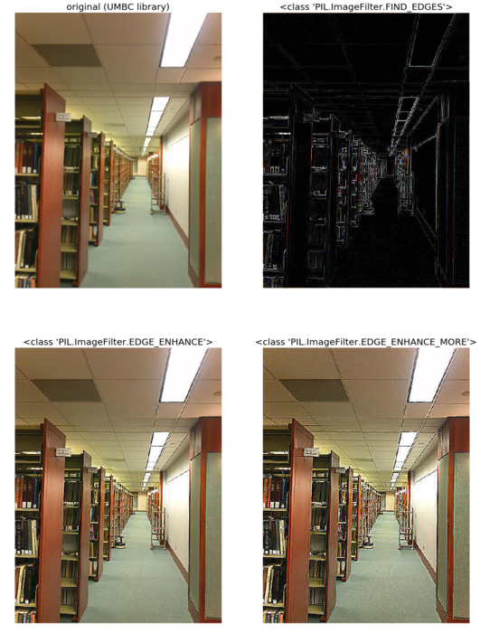
The following screenshot above shows the output of the preceding code with different edge finding/enhancing filters.
We can construct the Gaussian pyramid of an image by starting with the original image and creating smaller images iteratively, first by smoothing (with a Gaussian filter to avoid anti-aliasing), and then by subsampling (collectively called reducing) from the previous level's image at each iteration until a minimum resolution is reached. The image pyramid created in this way is called a Gaussian pyramid. These are good for searching over scale (for instance, template-matching), precomputation, and image processing tasks by editing frequency bands separately (for instance, image blending). Similarly, a Laplacian pyramid for the image can be constructed by starting from the smallest sized image in the Gaussian pyramid and then by expanding (up-sampling plus smoothing) the image from that level and subtracting it from the image from the next level of the Gaussian pyramid, and repeating this process iteratively until the original image size is reached. In this section, we shall see how to write python code to compute the image pyramids, and then look at an application of the image pyramids for blending two images.
The Gaussian pyramid from an input image can be computed using the scikit-image.transform.pyramid module's pyramid_gaussian() function. Starting with the original image, the function calls the pyramid_reduce() function to obtain the smoothed and down-sampled images recursively. The following code block demonstrates how to compute and display such a Gaussian pyramid with the lena RGB input image:
xxxxxxxxxxfrom skimage.transform import pyramid_gaussianimage = imread('../images/lena.jpg')nrows, ncols = image.shape[:2]pyramid = tuple(pyramid_gaussian(image, downscale=2)) #, multichannel=True))
plt.figure(figsize=(20,5))i, n = 1, len(pyramid)for p in pyramid: plt.subplot(1,n,i), plt.imshow(p), plt.title(str(p.shape[0]) + 'x' + str(p.shape[1])), plt.axis('off') i += 1plt.suptitle('Gaussian Pyramid', size=30)plt.show()
compos_image = np.zeros((nrows, ncols + ncols // 2, 3), dtype=np.double)compos_image[:nrows, :ncols, :] = pyramid[0]
i_row = 0for p in pyramid[1:]: n_rows, n_cols = p.shape[:2] compos_image[i_row:i_row + n_rows, ncols:ncols + n_cols] = p i_row += n_rows
fig, ax = plt.subplots(figsize=(20,20))ax.imshow(composite_image)plt.show()xxxxxxxxxxC:\Users\Sandipan.Dey\Anaconda\envs\ana41py35\lib\site-packages\skimage\transform\_warps.py:24: UserWarning: The default multichannel argument (None) is deprecated. Please specify either True or False explicitly. multichannel will default to False starting with release 0.16.warn('The default multichannel argument (None) is deprecated. Please '
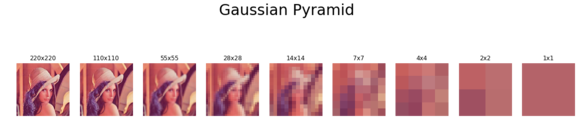
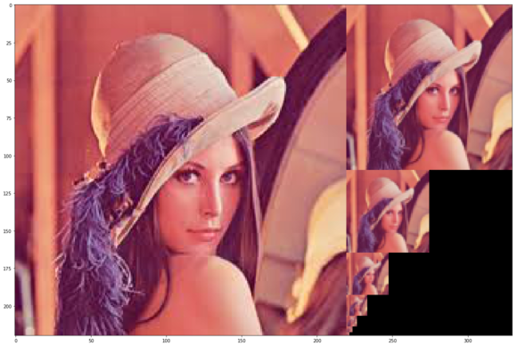
The images gotten show the output of the preceding code block: the images from the Gaussian pyramid. As we can see, there are nine levels in the pyramid, the top level being the original image of resolution 220 x 220, and the last image being the smallest image consisting of a single pixel; at each consecutive level down the pyramid, the image height and width get reduced by a factor of two
The Laplacian pyramid from an input image can be computed using the scikit-image.transform.pyramid module's pyramid_laplacian() function. Starting with the difference image of original image and its smoothed version, the function computes the down-sampled and the smoothed image, and takes the difference of these two images to compute the image corresponding to each layer recursively. Motivation for creating a Laplacian pyramid is to achieve compression, since the compression rates are higher for predictable values around 0.
The code to compute the Laplacian pyramid is similar to that of the previous code for computing the Gaussian pyramid; [[it is left as an exercise for the reader]]. The following screenshot shows the Laplacian pyramid for the lena gray-scale image:
xxxxxxxxxximport numpy as npimport matplotlib.pyplot as plt
from skimage.transform import pyramid_laplacianfrom skimage.color import rgb2gray
image = imread('../images/lena.jpg')#image = imread('../new images/orange.png')[...,:3]nrows, ncols = image.shape[:2]pyramid = tuple(pyramid_laplacian(image, downscale=2)) #, multichannel=True))
plt.figure(figsize=(20,20))i, n = 1, len(pyramid)for p in pyramid: plt.subplot(3,3,i), plt.imshow(rgb2gray(p), cmap='gray'), plt.title(str(p.shape[0]) + 'x' + str(p.shape[1])) plt.axis('off') i += 1plt.suptitle('Laplacian Pyramid', size=30)plt.show()
composite_image = np.zeros((nrows, ncols + ncols // 2), dtype=np.double)
composite_image[:nrows, :ncols] = rgb2gray(pyramid[0])
i_row = 0for p in pyramid[1:]: n_rows, n_cols = p.shape[:2] composite_image[i_row:i_row + n_rows, ncols:ncols + n_cols] = rgb2gray(p) i_row += n_rows
fig, ax = plt.subplots(figsize=(20,20))ax.imshow(composite_image, cmap='gray')plt.show()xxxxxxxxxxC:\Users\Sandipan.Dey\Anaconda\envs\ana41py35\lib\site-packages\skimage\transform\_warps.py:24: UserWarning: The default multichannel argument (None) is deprecated. Please specify either True or False explicitly. multichannel will default to False starting with release 0.16.warn('The default multichannel argument (None) is deprecated. Please '
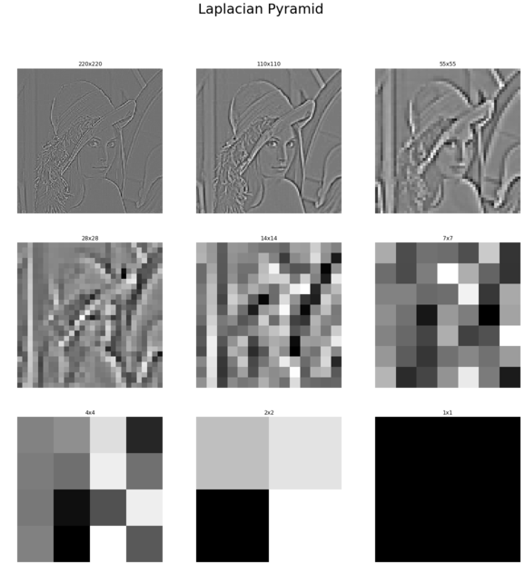
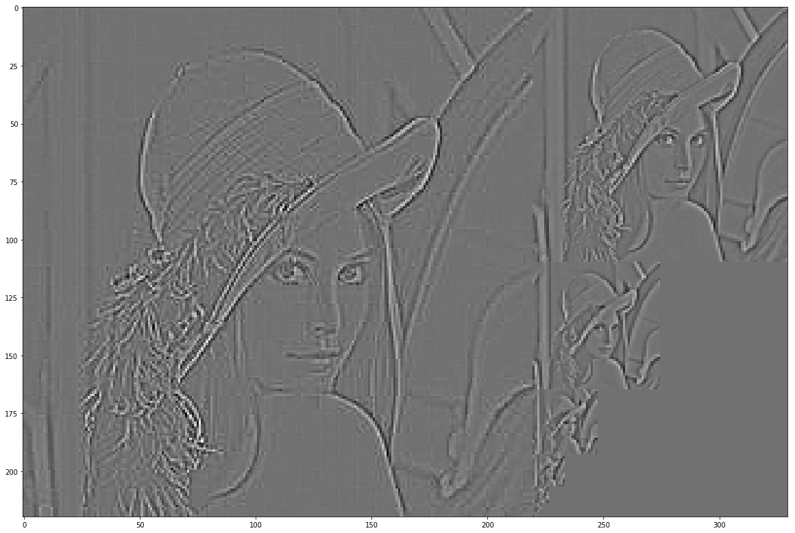
Notice that the lowest resolution image in the Laplacian pyramid and the lowest resolution image in the Gaussian pyramid are going to be different images if we use the pyramid_gaussian() and pyramid_laplacian() functions of scikit-image, which is something that we do not want. We want to build a Laplacian pyramid where the smallest resolution image is exactly the same as that of the Gaussian pyramid, as this will enable us to construct an image only from its Laplacian pyramid. In the next couple of sections, we shall discuss the algorithms to construct our own pyramids by using the expand() and reduce() functions of scikit-image.
The Gaussian pyramid can be computed with the following steps:
xxxxxxxxxximport numpy as npimport matplotlib.pyplot as plt
from skimage.io import imreadfrom skimage.color import rgb2grayfrom skimage.transform import pyramid_reduce, pyramid_laplacian, pyramid_expand, resize
image = imread('../images/antelops.jpeg')
def get_gaussian_pyramid(image): rows, cols, dim = image.shape gaussian_pyramid = [image] while rows > 1 and cols > 1: #print(rows, cols) image = pyramid_reduce(image, downscale=2) gaussian_pyramid.append(image) #print(image.shape) rows //= 2 cols //= 2 return gaussian_pyramidThe Laplacian pyramid can be computed with the following algorithm:
xxxxxxxxxxdef get_laplacian_pyramid(gaussian_pyramid): laplacian_pyramid = [gaussian_pyramid[len(gaussian_pyramid)-1]] for i in range(len(gaussian_pyramid)-2, -1, -1): image = gaussian_pyramid[i] - resize(pyramid_expand(gaussian_pyramid[i+1]), gaussian_pyramid[i].shape) #print(i, image.shape) laplacian_pyramid.append(np.copy(image)) laplacian_pyramid = laplacian_pyramid[::-1] return laplacian_pyramid
gaussian_pyramid = get_gaussian_pyramid(image)laplacian_pyramid = get_laplacian_pyramid(gaussian_pyramid) w, h = 20, 12for i in range(3): plt.figure(figsize=(w,h)) p = gaussian_pyramid[i] plt.imshow(p) plt.title(str(p.shape[0]) + 'x' + str(p.shape[1]), size=20) plt.axis('off') w, h = w / 2, h / 2 plt.show() w, h = 10, 6for i in range(1,4): plt.figure(figsize=(w,h)) p = laplacian_pyramid[i] plt.imshow(rgb2gray(p), cmap='gray') plt.title(str(p.shape[0]) + 'x' + str(p.shape[1]), size=20) plt.axis('off') w, h = w / 2, h / 2 plt.show()xxxxxxxxxxC:\Users\Sandipan.Dey\Anaconda\envs\ana41py35\lib\site-packages\skimage\transform\_warps.py:24: UserWarning: The default multichannel argument (None) is deprecated. Please specify either True or False explicitly. multichannel will default to False starting with release 0.16.warn('The default multichannel argument (None) is deprecated. Please 'C:\Users\Sandipan.Dey\Anaconda\envs\ana41py35\lib\site-packages\skimage\transform\_warps.py:105: UserWarning: The default mode, 'constant', will be changed to 'reflect' in skimage 0.15.warn("The default mode, 'constant', will be changed to 'reflect' in "C:\Users\Sandipan.Dey\Anaconda\envs\ana41py35\lib\site-packages\skimage\transform\_warps.py:110: UserWarning: Anti-aliasing will be enabled by default in skimage 0.15 to avoid aliasing artifacts when down-sampling images.warn("Anti-aliasing will be enabled by default in skimage 0.15 to "
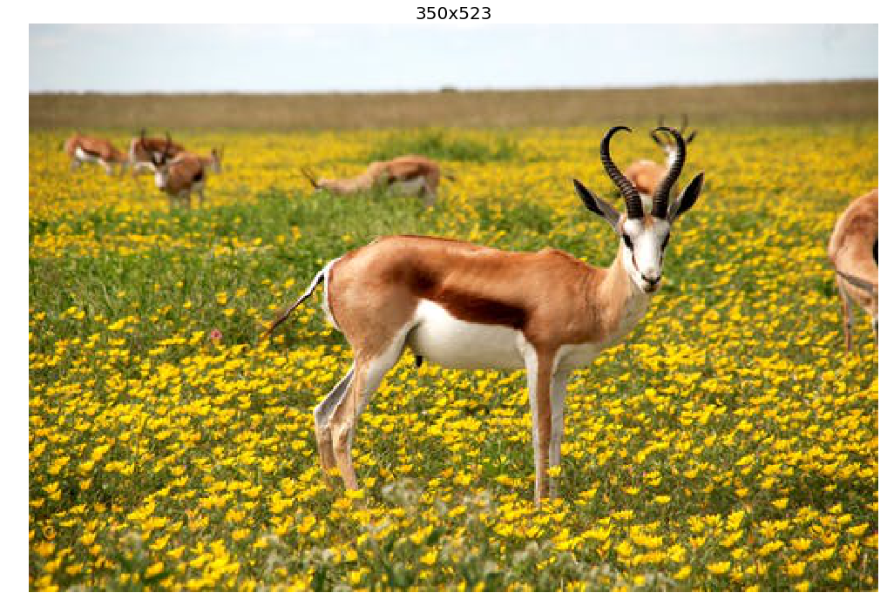
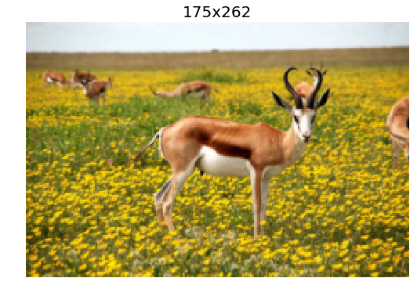
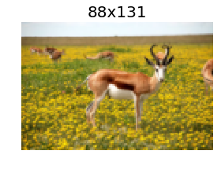
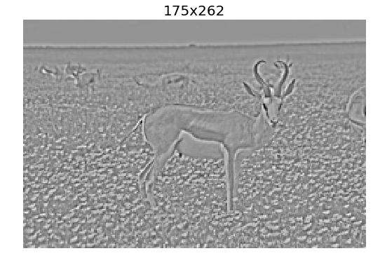
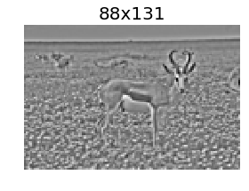
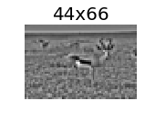
The following diagram shows how to reconstruct an image from only its Laplacian pyramid, if we construct one by following the algorithms described in the previous section:
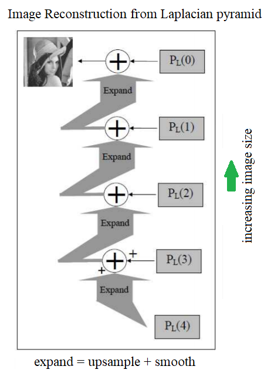
The following picture shows the output of the preceding code, how the original image is finally constructed from its Laplacian pyramid only using the expand() operation on each level's image, and adding it to the next level's image iteratively
xxxxxxxxxxdef reconstruct_image_from_laplacian_pyramid(pyramid): i = len(pyramid) - 2 prev = pyramid[i+1] #plt.figure(figsize=(20,20)) j = 1 while i >= 0: prev = resize(pyramid_expand(prev, upscale=2), pyramid[i].shape) im = np.clip(pyramid[i] + prev,0,1) #plt.subplot(3,3,j) plt.imshow(im) plt.title('Level=' + str(j) + ', ' + str(im.shape[0]) + 'x' + str(im.shape[1]), size=20) prev = im i -= 1 j += 1 return im
image = imread('../images/apple.png')[...,:3] / 255pyramid = get_laplacian_pyramid(get_gaussian_pyramid(image))im = reconstruct_image_from_laplacian_pyramid(pyramid)xxxxxxxxxxC:\Users\Sandipan.Dey\Anaconda\envs\ana41py35\lib\site-packages\skimage\transform\_warps.py:24: UserWarning: The default multichannel argument (None) is deprecated. Please specify either True or False explicitly. multichannel will default to False starting with release 0.16.warn('The default multichannel argument (None) is deprecated. Please 'C:\Users\Sandipan.Dey\Anaconda\envs\ana41py35\lib\site-packages\skimage\transform\_warps.py:105: UserWarning: The default mode, 'constant', will be changed to 'reflect' in skimage 0.15.warn("The default mode, 'constant', will be changed to 'reflect' in "C:\Users\Sandipan.Dey\Anaconda\envs\ana41py35\lib\site-packages\skimage\transform\_warps.py:110: UserWarning: Anti-aliasing will be enabled by default in skimage 0.15 to avoid aliasing artifacts when down-sampling images.warn("Anti-aliasing will be enabled by default in skimage 0.15 to "
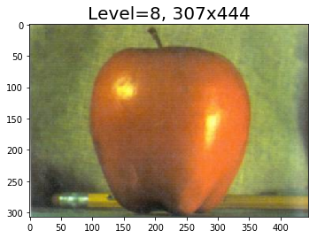
Let's say we have a couple of RGB color input images, A (apple) and B (orange), and a third binary mask image, M; all three images are of the same size. The objective is to blend image A with B, guided by the mask, M (if a pixel in the mask image M has a value of 1, it implies that this pixel is be taken from the image A, otherwise from image B). The following algorithm can be used to blend two images using the Laplacian pyramids of images A and B (by computing the blended pyramid using the linear combination of the images at the same levels of the Laplacian pyramids from A and B, with the weights from the same level of the Gaussian pyramid of the mask image M), followed by reconstructing the output image from the Laplacian pyramid: 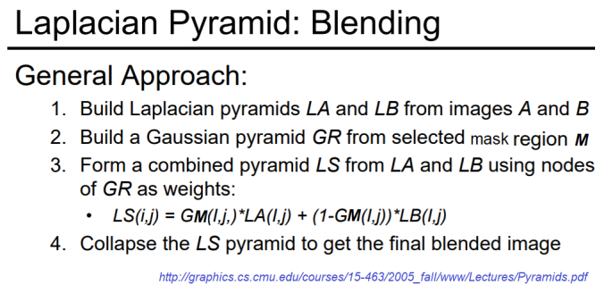
xxxxxxxxxx% matplotlib inlineimport numpy as npimport matplotlib.pyplot as plt
A = imread('../images/apple.png')[...,:3] / 255B = imread('../images/orange.png')[...,:3] / 255M = imread('../images/mask.png')[...,:3] / 255
rows, cols, dim = A.shapepyramidA = get_laplacian_pyramid(get_gaussian_pyramid(A))pyramidB = get_laplacian_pyramid(get_gaussian_pyramid(B))pyramidM = get_gaussian_pyramid(M)
pyramidC = []for i in range(len(pyramidM)): im = pyramidM[i]*pyramidA[i] + (1-pyramidM[i])*pyramidB[i] #print(np.max(im), np.min(im), np.mean(im)) pyramidC.append(im)
im = reconstruct_image_from_laplacian_pyramid(pyramidC)
plt.imshow(im)plt.axis('off')plt.show()xxxxxxxxxxC:\Users\Sandipan.Dey\Anaconda\envs\ana41py35\lib\site-packages\skimage\transform\_warps.py:24: UserWarning: The default multichannel argument (None) is deprecated. Please specify either True or False explicitly. multichannel will default to False starting with release 0.16.warn('The default multichannel argument (None) is deprecated. Please 'C:\Users\Sandipan.Dey\Anaconda\envs\ana41py35\lib\site-packages\skimage\transform\_warps.py:105: UserWarning: The default mode, 'constant', will be changed to 'reflect' in skimage 0.15.warn("The default mode, 'constant', will be changed to 'reflect' in "C:\Users\Sandipan.Dey\Anaconda\envs\ana41py35\lib\site-packages\skimage\transform\_warps.py:110: UserWarning: Anti-aliasing will be enabled by default in skimage 0.15 to avoid aliasing artifacts when down-sampling images.warn("Anti-aliasing will be enabled by default in skimage 0.15 to "
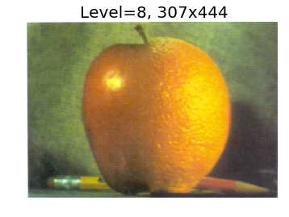
In this chapter, we first discussed edge detection of images using several filters (Sobel, Prewitt, Canny, and so on) and by computing the gradient and Laplacian of an image. Then, we discussed LoG/DoG operators and how to implement them and detect edges with zero-crossing. Next, we discussed how to compute image pyramids and use Laplacian pyramids to blend two images smoothly. Finally, we discussed how to detect blobs with scikit-image. On completion of this chapter, the reader should be able to implement edge detectors (Sobel, Canny, and so forth) in an image with Python using different filters. Also, the reader should be able to implement filters to sharpen an image, and find edges at different scales using LoG/DoG. Finally, they should be able to blend images with Laplacian/Gaussian pyramids and implement blob detection in an image at different scale-spaces. In the next chapter, we shall discuss feature detection and extraction techniques from images.